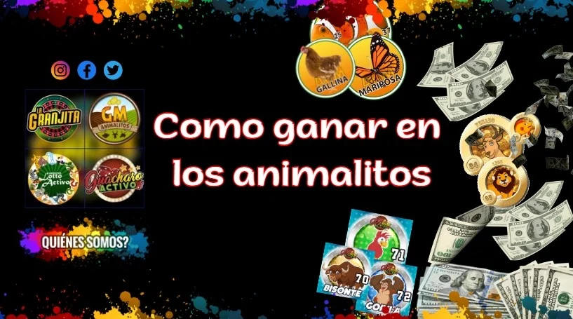
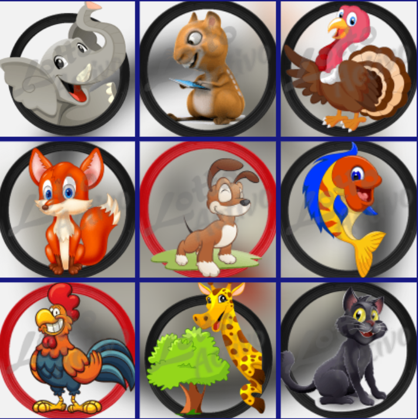
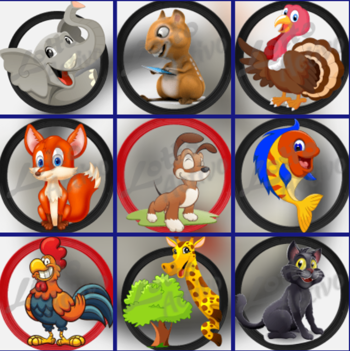

Cómo ganar en los animalitos: trucos y estrategias
Dr.Animalitos / 06 jul, 2024
Ganar en grande con Los Animalitos? Articulo y guía completa para aumentar tus posibilidades de éxito en los animalitos. Abordaremos estrategias, estadísticas, pronósticos y datos calientes, consejos para jugar online y mucho más..

Miles de personas diariamente en busca de la suerte en grande en los sorteos de animalitos. Este juego de azar, conocido por su variedad de opciones como Granja Millonaria, donde puedes encontrar resultados y dividendos, captura la atención de jugadores en toda Venezuela y en gran parte del mundo. Los números ganadores en granjita, guacharo activo, loto y granja millonaria, se convierten en la fuente de información más buscada todos los dias...
🚨¿Cómo saber qué animalito va a salir hoy?
Predecir con total exactitud qué animalito va a salir es imposible. Sin embargo, existen estrategias que te pueden ayudar a aumentar tus posibilidades de ganar:
🚨Método piramidal:
Se basa en la fecha de nacimiento o en resultados anteriores para determinar los animalitos con mayor probabilidad de salir.
🚨Método de la calculadora:
Te permite calcular las probabilidades de que un animalito salga en base a su frecuencia en los últimos sorteos.
🚨Animales con mayor frecuencia:
Observar qué animalitos han salido más veces en los últimos días o semanas.
🚨Animales "enjaulados:
Identificar los animalitos que no han salido en un tiempo considerable.
🚨Animal favorito:
Apostar por un animalito con el que tengas una conexión especial.
🚨NOTA:🚨
No hay una estrategia infalible, todas tienen un margen de error.
Juega con responsabilidad y establece un presupuesto.

 
